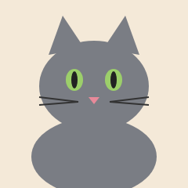
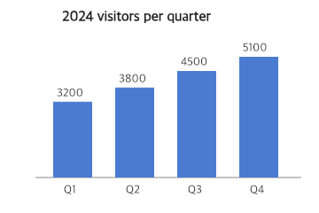

灰貓咖啡館搬遷與營業時間公告
發布日期：2025 年 2 月 10 日
灰貓咖啡館於 2019 年 4 月在台北市大安區開幕。為了提供貓咪更寬敞的活動空間，本店將於 2025 年 3 月 1 日搬遷至台北市信義區松仁路 100 號一樓，原大安區店面營業至 2 月 23 日為止。
新店營業時間
| 日期 | 營業時間 |
|---|---|
| 星期一 | 公休 |
| 星期二至星期五 | 11:00 至 20:00 |
| 星期六、星期日 | 10:00 至 21:00 |
最後點餐時間為打烊前 30 分鐘。國定假日照常營業。
店裡的貓咪
目前店內共有 6 隻貓，全部都已結紮，並每半年接受一次健康檢查。年紀最大的是 12 歲的灰色公貓「阿灰」，牠也是本店名稱的由來；最年輕的是 2 歲的橘貓「麻糬」。

來客數
2024 年全年來客數約 16,600 人次，第四季達到 5,100 人次，是開幕以來最高的一季。座位經常客滿，因此新店的座位將由 18 席增加到 32 席。

入店須知
- 每位客人低消一杯飲料，用餐時間為 2 小時。
- 未滿 10 歲的兒童需由成人陪同入店。
- 請勿餵食貓咪人類食物，也請不要在貓咪睡覺時把牠抱起來。
- 拍照時請關閉閃光燈。